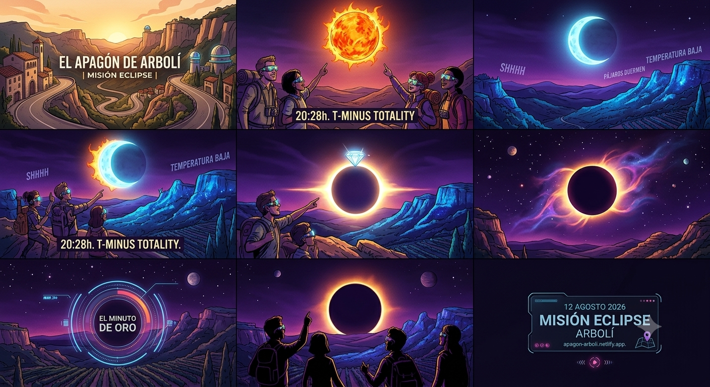

Gran Eclipse Solar Total
EL APAGÓN DE ARBOLÍ
Misión Eclipse 2026 | Familia y Amigos
Evento astronómico
12 de agosto de 2026
A las 20:28:00, el atardecer se apagará de golpe cuando la Luna cubra al Sol. La luz bajará, el aire cambiará y la sensación será casi mágica.
Temperatura
Bajada rápida
Sonido
Pájaros a dormir
¿Qué va a pasar?
La Luna eclipsará el Sol y el cielo cambiará de golpe.
A las 20:28, la tarde en Arbolí se convertirá en algo casi imposible de describir. El Sol desaparecerá tras la Luna, la luz del atardecer se apagará de una forma brutal y el cielo se llenará de una emoción colectiva que hará que todo el mundo mire hacia arriba con la boca abierta.
Dato curioso
Es el primer eclipse total en España en más de un siglo. Durante esos minutos, la temperatura bajará de golpe, los pájaros se irán a dormir y el mundo entero se verá como si fuera un sueño.
Infografía
Resumen visual del eclipse

Vídeo
Momento eclipse
Programa de la tarde
Timeline del eclipse
18:30
Punto de Encuentro
Llegada a Arbolí para agrupar coches y preparar la salida.
19:00
Desplazamiento por carretera
Desplazamiento de 10 minutos en coche hasta el parking de la carretera de Los Castillejos.
19:15
Caminata hasta la Zona Cero
Paseo de 15 minutos andando por pista forestal hasta el punto de observación, donde esperaremos el eclipse justo antes del ocaso.
20:28
El Gran Apagón
Gafas puestas y alucine máximo con la corona solar.
21:15
Cena Rural
Bajada de adrenalina y comilona para comentar la jugada.
Logística y coordenadas
Qué llevar y cómo encontrar el punto
- Gafas de eclipse (las pone la organización).
- Chaqueta: va a refrescar de golpe cuando el Sol desaparezca.
- Linterna frontal para la bajada, porque la noche llega rápido.

Escanea para abrir en la App de Wikiloc
Aviso importante
El mejor sitio para observar el eclipse es el entorno natural y despejado de Arbolí.
Si llegas con familia o amigos, reserva un pequeño rato para cruzar el punto de reunión con calma.
Recuerda: el espectáculo dura muy poco, pero la experiencia se queda para siempre.